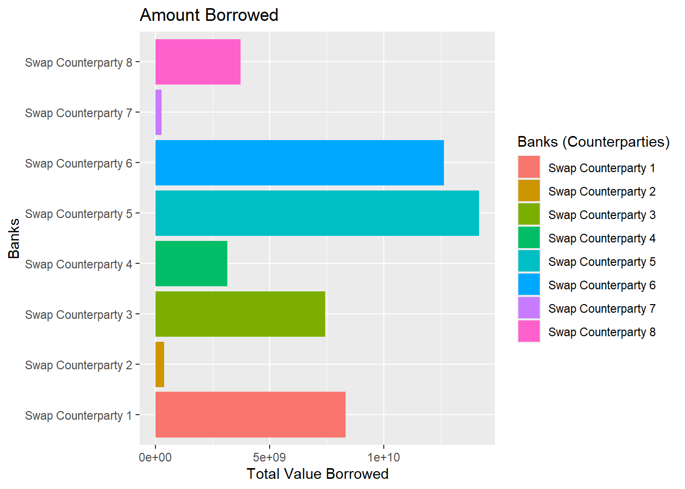

library(tidyverse)
library(ggrepel)
## Originally doc "https://storage.courtlistener.com/recap/gov.uscourts.nysd.578896/gov.uscourts.nysd.578896.25.2.pdf"
## Data needed a lot of tidying and manipulation to function properly within R
data <- read_csv("C:/Users/Iggs/Desktop/R/miniproject6/swap_data_format.csv")
short_position <- ggplot(data, aes(x = Date, y = Cumulative)) +
geom_line() + # Line plot
labs(
title = "Swap Position",
x = "Date",
y = "Swap Position Total (1e+10 = Billion)"
) +
theme_minimal()
short_positionMiniproject6: Swap Contract Visual
For our last miniproject we are submitting, I wanted to visually express, in my opinion, one of the largest issues plaguing our global markets. Most data within prime brokers (banks) are private and free from investigation unless warrants are obtained. Therefore, we won’t see anything going wrong until the situation is catastrophic.
I will try to keep any explanations and visual representations brief and digestible. A list of definitions will be available at the bottom of this document.
In just about every financial market, there exist a type of private contract, called a “swap”. These are customization contracts that are privately traded between institutions such as banks, hedge funds, family offices, and sometimes, even the federal government. Contents of a swap can be almost anything. Some hold stocks, maybe future contracts, sometimes mortgages.
The glaring issue with these contracts, is that they’re private AND usually protected information as to prevent competitors from taking advantage of those position.
Let’s run through an example of how swaps work and how it can go wrong:
Let’s say I run a bank, and for the sake of the example, our depositors give us automobiles to hold in their accounts. We take all of these automobiles in on deposit and put them in a parking lot. These automobiles are just sitting there, how can we efficiently hold these assets and make money from them? Let’s put them in a swap and make interest from it!
So after packaging all of our depositor automobiles into a swap, we allow “Hedge Fund A” to borrow it and pay us 1% interest. Sounds great so far, we are making money from what would be just sitting in an account. Here’s the problem though, “Hedge Fund A” speculated that these automobiles would go up in value and wanted to benefit as much as possible from their research. So instead of just getting automobiles from us, they took automobiles from EVERYONE and now own 70% of that market. There’s no way for them to sell all of them back and make a profit. If we (the bank) had known they were doing this, we wouldn’t have loaned them to “Hedge Fund A”. Hence the issue, how could we know?
The United States has several three letter agencies policing our financial markets, so how do they make sure these swaps aren’t used improperly? Simply put, they don’t. Because they’re protected, they can’t monitor them.
Let’s take a look at a recent example of when things go wrong and peak into the Archegos Capital situation and what lead to them defaulting. Below is their swap positions over time:
According to the data released in the legal proceedings, Archegos Capital continuously took total-return swaps (swaps that are issued through banks, also known as prime brokers) and ballooned their exposure to the market. In total, it looks like they accumulated over $50 billion of exposure from April 2020 - April 2021. So they have $50 billion they took on loan.
Now here’s the interesting part of this situation. Prime brokers (banks) require 20% collateral to be presented on swap positions. Let’s see what that looks like with our short position graph above.
margin_requirement <-
ggplot(data, aes(x = Date)) +
geom_line(aes(y = Cumulative), color = 'black') +
geom_line(aes(y = Cumulative_20_percent), color = 'red') +
labs(
title = "Swap Position",
x = "Date",
y = "Swap Position Total (1e+10 = Billion)"
) +
theme_minimal()
margin_requirementAccording to our graph, they needed upwards of $10 billion to post collateral for these swaps as per margin requirements. However, according to the SEC, Archegos had no where close to their margin requirements.
“Archegos allegedly underwent a period of rapid growth, increasing in value from approximately $1.5 billion with $10 billion in exposure in March 2020 to a value of more than $36 billion with $160 billion in exposure at its peak in March 2021.”1
Well if they’re valued at $36 billion, surely they had $10 billion to post as collateral.
This is the most important detail:
If we view Archegos Capital’s holdings, the majority of the holdings were in only 10 companies. This would be fine for companies worth hundreds of billions, but when your firm owns over 50% of a companies stock, you start to look dangerously close to our example of when swaps go wrong.
Taking a look at their largest holdings, they owned approximately $28.6 billion or 50% of VIAC (ViacomCBS) when defaulting.[^2]
[^2] : https://www.sec.gov/files/litigation/complaints/2022/comp-pr2022-70.pdf
The SEC uses this graph of how their purchasing impacted the price of their holdings:
Purchasing 50% of the company drove the price up over 150%, and as we can see after 3/26/2021, VIAC returned to it’s originally price following the meltdown of Archegos Capital.
How did Archegos Capital hide it’s exposure?
Simply put, Archegos used a strategy of hiding their positions in swaps (to avoid ownership reporting requirements) and by using several counterparties (banks).
If we break down each individual banks swap contracts with Archegos Capital it helps to understand how they avoided detection.
parties <- data |>
group_by(Counterparty) |>
summarize(total_amount = sum(Notional_short)) |>
ggplot(aes(x = Counterparty, y = total_amount, fill = Counterparty)) +
geom_bar(stat = "identity") +
coord_flip() +
labs (
title = "Amount Borrowed",
x = "Banks",
y = "Total Value Borrowed",
fill = "Banks (Counterparties)"
)
parties
When we look at from any individual bank’s perspective, Archegos Capital didn’t borrow an excessive amount. Because this information wasn’t public, there wasn’t a way for any of these banks to detect that Archegos Capital was “cooking their books”.
Upon Archegos Capital’s default, Credit Suisse took over their positions and lost over $5.5 billion.
Should swap information be public?
There isn’t a good answer for that, but I’ll list off some of my considerations for and against.
For open information
We prevent institutional traders, like Archegos Capital, from abusing their connection to prime brokers and having a competitive advantage over individual traders
- Swap contracts are an investment vehicle only available to large firms
Prevents exploiting their hidden positions to secretly acquire large amounts of a company
- SEC requires the reporting of any position exceeding 10% ownership of a company
For private information
Prevents front-running
Markets require efficient systems for price discovery
Defaulting among larger firms are rare and we shouldn’t change our current rules on a few bad actors
### Definitions >Bank and Prime Broker is mostly interchangable >Swap Contract is a customizable financial contract >Counterparty, in this context, issuer of swap contract
Footnotes
https://www.sec.gov/newsroom/press-releases/2022-70↩︎